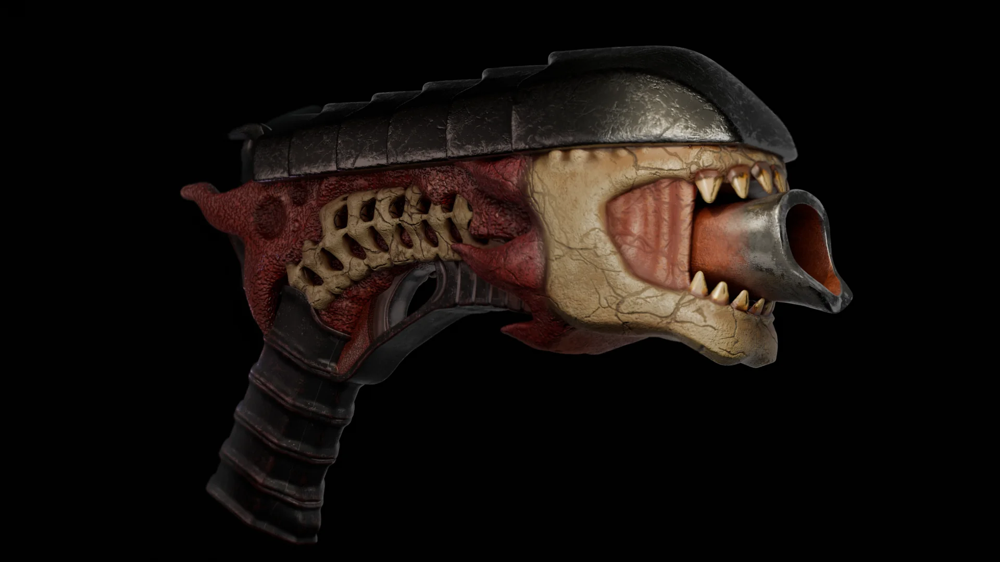

← All casesВсе кейсы

Case 06 · Hero prop
Bone Pistol
A dark-fantasy creature weapon: ridged metal top, vertebra-like bone frame, raw red flesh, wrapped grip and a fanged skull for a muzzle.Оружие-существо в стиле dark fantasy: рифлёная металлическая крышка, костяной каркас-позвонки, красная плоть, обмотанная рукоять и клыкастый череп вместо дула.
TaskЗадача
A pistol silhouette built entirely from anatomy.Силуэт пистолета, собранный целиком из анатомии.
My partМой вклад
- Modeling and sculpt detailМоделинг и скульпт деталей
- Four materialsЧетыре материала
- Presentation rendersРендеры подачи
DecisionsРешения
- Spine plates, ribs and jaw keep it readable as a gunПластины хребта, рёбра и челюсть оставляют его читаемым как оружие
- Metal, bone, flesh and leather separated by texture and roughnessМеталл, кость, плоть и кожа разделены фактурой и шероховатостью
ResultРезультат
Side and ¾ renders.Рендеры сбоку и в ¾.
01 · Views
Two anglesДва ракурса
Side and three-quarter views from the original renders.Вид сбоку и в три четверти, оригинальные рендеры.
